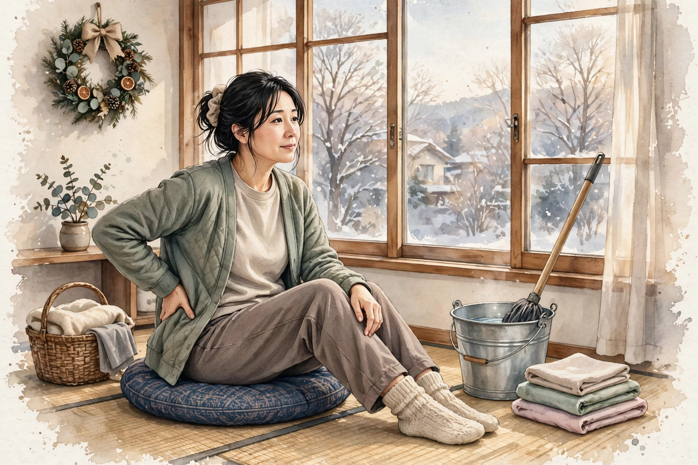
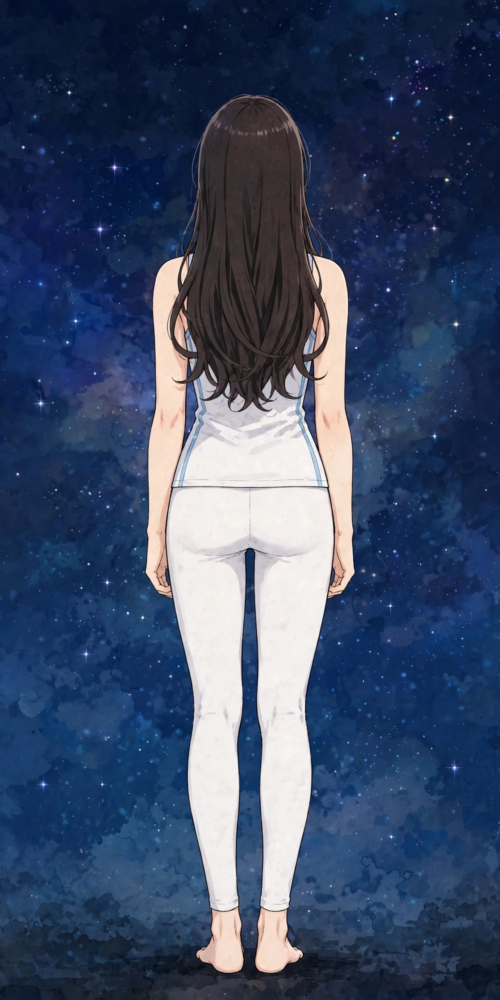

三ノ宮で年末の大掃除の後に気になる腰の重さ｜要因の整理とセルフケア、受診の目安セルフケア

年末の大掃除を終えたあとや、掃除の合間に、腰まわりが重だるく感じる、腰が張った感じが残る方へ。年末の大掃除の後に目立ちやすい腰の重さについて、一般的な解説と考えられる要因、作業の合間に取り入れられるセルフケア、受診の目安を整理しました。
腰の重さとは — 年末の大掃除の後に気になりやすい腰の重だるさ
腰の重さは、腰や腰まわりに重さやだるさを感じる状態を指す、日常的によく使われる言葉です。感じ方には、腰まわりが重だるく感じる、腰が張った感じがする、腰まわりが固まっているように感じる、といった表れ方があり、程度には個人差があります。年末の大掃除の場面では、「押し入れの荷物を出し入れした夕方から、腰まわりが重だるくなる」「窓ふきで高いところへ手を伸ばし続けたあと、立ち上がるときに腰が伸びにくい感じがする」「床の拭き掃除をした日の夜、腰が張った感じが残る」「換気扇やお風呂の掃除で中腰が続いた翌朝、腰まわりが固まったように感じる」といった声を聞くことがあります。ふだんの家事とは違い、大掃除は普段手をつけない場所までまとめて行うため、中腰や前かがみの姿勢、重い荷物の持ち運び、高いところへ手を伸ばす動きが一日の中に重なりやすく、その日の夜や翌日に腰の重さとして感じられる場合があるとされます。なお、週末・休みの日の場面に絞った記事三ノ宮で週末に気になる腰の重さ｜休みの日の過ごし方とセルフケア、受診の目安、デスクワーク後の場面に絞った記事三ノ宮でデスクワーク後に気になる腰の重さ｜座りっぱなしの日の整え方とセルフケア、受診の目安、季節の変わり目の場面に絞った記事三ノ宮で季節の変わり目に気になる腰の重さ｜立ち座りと荷物の持ち方を見直す、朝・起き抜けの場面に絞った記事三ノ宮で朝に気になる腰の重さ｜起き抜けの過ごし方とセルフケア、受診の目安も公開しています。この記事では場面を年末の大掃除の後に、症状を腰の重さに絞って眺めます。ここでは原因を一つに決めつけず、考えられる要因と大掃除の日の付き合い方を整理します。
関係する部位の目安は、図1のとおりです。
図1｜大掃除の作業で負担が寄りやすい首・肩／腰／お尻（横向き）

考えられる要因
要因は一つとは限りません。まず作業姿勢の面では、床の拭き掃除や低い棚・押し入れの下段の片づけ、お風呂場の掃除などで中腰や前かがみの姿勢が続くことが、腰まわりの負担として重なる場合があるとされます。荷物の面では、押し入れの箱や布団、たまったゴミ袋など、ふだん持たない重さのものを繰り返し持ち上げたり運んだりすることも、腰の重さとして感じられる場合があるようです。高いところの作業では、窓の上部や照明、換気扇の掃除で背伸びをしたり、腕を上げたままの姿勢が続いたりすることが、腰だけでなく肩や背中の張りと重なって表れる場合もあるとされます。時間の面では、「年内に終わらせたい」と作業を一日に詰め込み、休憩をはさまずに続けることで、同じ姿勢や同じ動きが長時間重なることも挙げられます。冷えの面では、水仕事が増えることや、薄着のまま換気で冷えた室内で過ごすこと、足元の冷えが、腰まわりの重さと重なって感じられる場合があるようです。そのほか、年末の慌ただしさで眠りが浅くなっていたり、ふだんの疲れが残っていたりすることも、感じ方に関わることがあるとされます。東洋医学では、腰まわりの重さは気・血の巡りのバランスの変化として捉えられてきました。腰の重さそのものの考え方は腰の重だるさのお悩み別ケアページ、家事と腰・肩の関わりについては家事疲れの腰・肩のお悩み別ケアページ、冷えについては冷えのお悩み別ケアページにもまとめています。大掃除のどの作業のあとに腰が気になったかを簡単にメモしておくと、来年以降の進め方を考える参考になります。
大掃除の合間に取り入れられるセルフケア
まずは作業の進め方の小さな工夫から始めてみてください。作業姿勢の面では、床に近い場所の掃除は腰だけを曲げず、片膝をついたり小さな椅子に座ったりする姿勢に置きかえること、高いところは無理に背伸びをせず安定した台や脚立を使うことも、意識しやすい工夫です。重いものを持つ場面では、腰だけを曲げて持ち上げず、膝も使って体に近づけてから持ち上げる流れや、荷物を小分けにして運ぶ回数を分ける持ち方が、腰への負担を分散させる工夫の一つとされます。休憩の取り方では、作業を一気に終わらせようとせず、30分から1時間ほどを目安に区切りを入れて一度立ち上がり、背伸びをする、肩を大きくゆっくり回す、といった小さな動きを挟むことが挙げられます。冷え対策の面では、腰やお腹、足首を冷やさない服装を選ぶこと、水仕事のあとは手を温めること、温かい飲み物を合間に挟むことも、日常で取り入れやすい過ごし方です。体を温める面では、作業の合間や一日の終わりに腰まわりへ温めたタオルを当てる、シャワーで済ませず湯船につかって腰まわりまで温める、といった過ごし方があります。水分は一度にまとめてではなくこまめにとることも、意識しやすい過ごし方です。大掃除を終えた夜は、照明を少し落として早めに休む準備をすることも、翌日に向けた工夫とされます。眠りについては眠りの浅さのお悩み別ケアページ、夜の過ごし方についてはブログ記事よく眠るための夜の工夫｜照明・入浴・スマホとの距離の取り方もあわせてご覧ください。腰まわりは強く押したり、痛みを我慢して動かしたりせず、気持ちよい範囲にとどめることが続けるうえでの目安になります。無理のない範囲で、一つか二つ選ぶところから始めてみてください。
セルフケアで意識したい場所の目安は、図2のとおりです。
図2｜腰まわりを温めるときに意識したいツボ（背面）

受診の目安
腰の痛みが強い、大掃除の後の腰の重さが数週間以上続く、または少しずつ強くなっている、脚のしびれや力の入りにくさがある、発熱を伴う、転倒や打撲のあとから痛みが出た、安静にしていても痛みが続く、排尿や排便の様子がいつもと違う、日常生活や仕事に支障が出ている——こうした場合は、自己判断で様子を見続けず、整形外科などの医療機関への相談をご検討ください。腰の症状は、腰以外の体の変化で表れる場合もあるとされるため、原因を一つに決めつけずに相談することが目安になります。当店の施術はリラクゼーションを目的としたもので、症状の診断・治療を行うものではありません。気になる症状があるときは、まず医療機関で相談したうえで、日常のケアの一つとしてサロンのご利用をお考えください。
三ノ宮で、年末の大掃除の後に腰の重さが気になる日に体を休める時間を
ステラスピカは神戸・三ノ宮エリアの女性専用サロンです。営業時間は月〜土17:00〜22:00（日曜休み・完全予約制）で、夕方から夜の時間帯にご利用いただけます。大掃除で体を動かした日や、年末の慌ただしさが続く時期も、その日の疲れをため込みすぎない過ごし方の一つとして、夕方の時間を体を休める時間にあてる方がいらっしゃいます。完全個室でご案内します。オイルマッサージ／美容整体は90分10,000円（税込）で、施術歴30年のセラピストが、その日の体調や気になるお悩みをうかがいながら、その日の状態に合わせて無理のない圧と内容で全身をケアする施術を組み立てます。施術では、腰・背中・お尻まわりから脚へ、つながりを意識しながら丁寧にほぐしていきます。なお、ステラスピカは開院し、ご予約はLINEで受け付けています。料金やメニューの詳細はメニュー・料金、ご予約の流れはご予約・お問い合わせをご覧ください。
ステラスピカ（三ノ宮） — 女性専用、90分 10,000円、月〜土17:00〜22:00、完全予約制です。